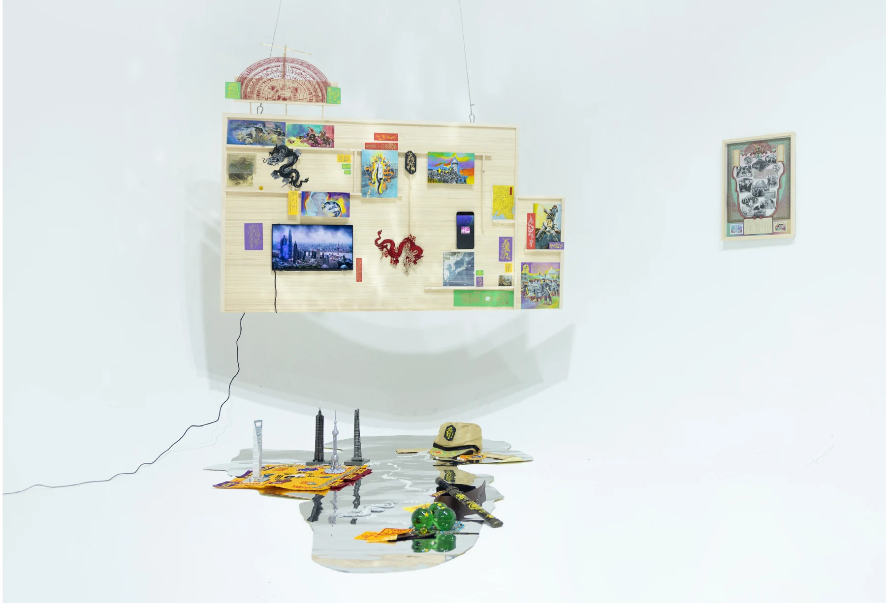

03 / 05图像再创作与动画装置
Images in the Mirror
当历史被重新讲述，图像留下怎样的矛盾。

PROJECT
个人项目
ROLE
资料收集、图像再创作、动画与跨媒介呈现
FORMAT
动画、印刷品、镜面与实体物件
从网络文化对中日关系与战争记忆的娱乐化重述出发，以绘画覆盖、图像拼贴和动画改写档案，观察历史情绪如何在当代被重新构建。
01
研究起点
历史记忆在网络叙事中被娱乐化、诙谐化地重新讲述。项目关注这些表达背后并存的敌意、欣赏与调侃，以及地域想象中复杂的情感结构。
02
创作选择
收集报纸、历史档案与图像资料，保留原始画面的可辨识部分，再通过绘画覆盖、图像叠加与动画改变其语境。原始材料与新增内容之间的冲突成为作品的表达方式。
03
最终呈现
将图像实验延展为动画、印刷品、镜面与物件的空间组合，使不同年代与语境中的视觉符号在同一观看情境中发生碰撞。
点击加载视频 · 如无法播放，可使用上方链接
NEXT PROJECT